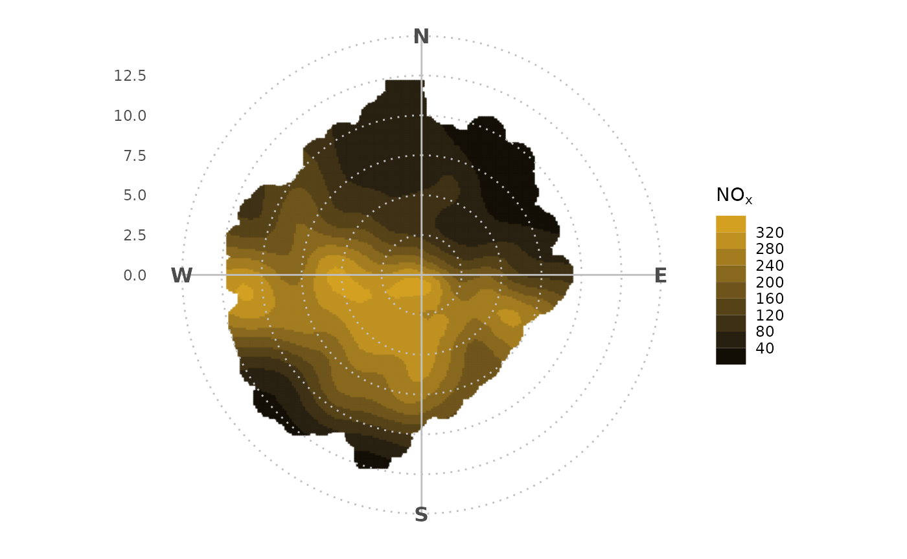

ggopenair Overview
ggopenair-overview.RmdIntroduction
An openair polar plot looks like this:
openair::polarPlot(ggopenair::marylebone)To achieve the same result in ggopenair one would write:
library(ggopenair)
library(ggplot2)
gg_polar_plot(marylebone, "nox") +
theme_polar() +
scale_opencolours_c()This is more long winded, but the flexibility allows users to customise their outputs very closely. For example:
Scales
Use any ggplot2 scale function to change how the plot
behaves. For example, use scale_color_binned() to bin the
colour bar.
gg_polar_plot(marylebone, "nox") +
theme_polar() +
scale_color_steps(
low = "black",
high = "goldenrod",
breaks = seq(0, 1000, 40)
)
Alternatively, one could use the “trans” argument to shift the colour
scale. This could be particularly useful for
gg_polar_freq(), which had its own “trans” argument in
openair.
shift_axis <- function(trans) {
gg_polar_freq(marylebone, "nox") +
theme_polar() +
scale_fill_gradientn(
colours = c("darkgreen", "hotpink"),
trans = trans
) +
labs(title = trans)
}
patchwork::wrap_plots(
shift_axis("identity"),
shift_axis("sqrt"),
shift_axis("log10")
)Annotations
Use annotate() to easily draw on your polar plots and to
draw attention to certain aspects. In-built annotation functions make it
easy to, for example, draw a highlighting wedge or direct axis
labels.
gg_polar_plot(marylebone, "nox") +
theme_polar() +
scale_opencolours_c("inferno") +
annotate_polar_wedge("S", "W") +
annotate_polar_axis(seq(5, 15, 5), color = "grey50")Calendar plots also possess their own dedicated annotation functions.
marylebone |>
openair::selectByDate(year = 2019) |>
gg_calendar("nox") +
annotate_calendar_text("date") +
annotate_calendar_wd(colour = "black") +
scale_opencolours_c()Extension
Use any of the ggplot2 extension packages out there,
such as patchwork. For example, a polar plot could be
inserted into a time variation plot.
library(patchwork)
polar <-
gg_polar_plot(marylebone, "nox") +
theme_polar() +
theme(panel.border = element_rect(fill = NA, color = "black")) +
scale_opencolours_c()
tv <- gg_timevariation(marylebone, "nox", return = "list")
tv <- purrr::map(tv, ~ .x + theme_classic() + theme(legend.position = "none", panel.border = element_rect(fill = NA)))
tv$day_hour / (tv$month | tv$day | polar) +
plot_layout(heights = c(.8, 1), guides = "collect")